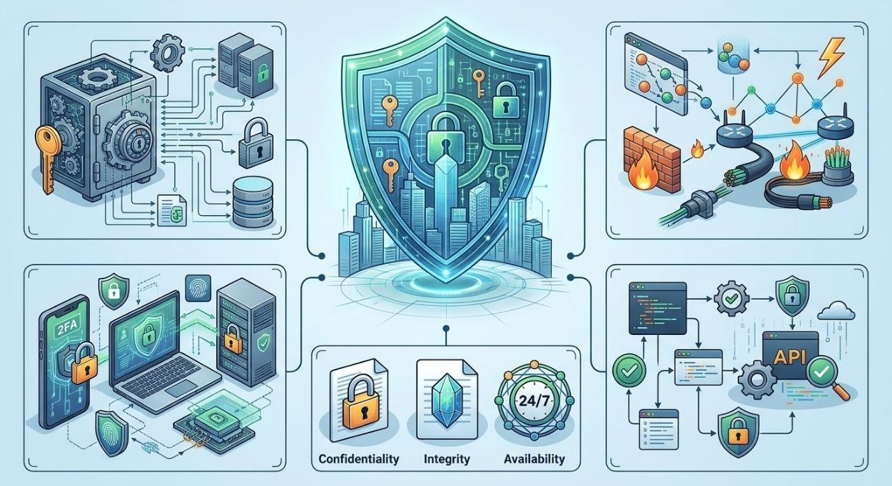
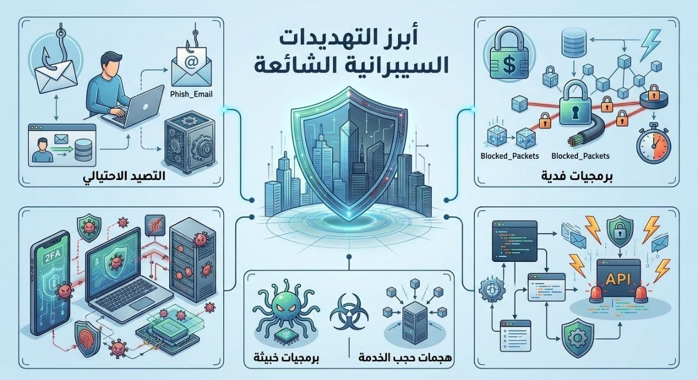
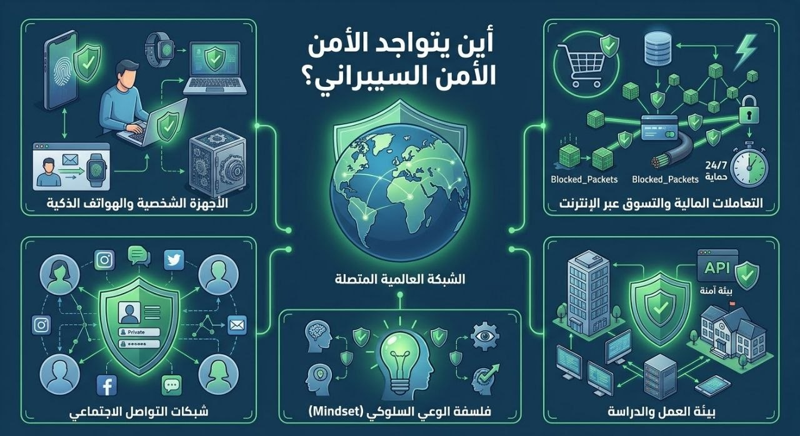
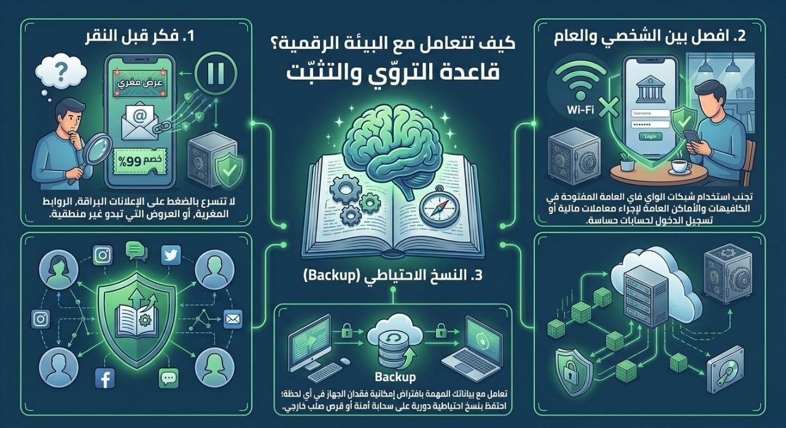

ما هو الأمن السيبراني؟
الأمن السيبراني هو درع الحماية الرقمي الذي يحمي بياناتك، أجهزتك، وحساباتك الشخصية من الاختراق أو السرقة عبر الإنترنت.
مثال واقعي: عندما تغلق باب منزلك قبل النوم لحمايته هكذا يقوم الأمن السيبراني بحماية بياناتك.
ركائز الأمن السيبراني
السرية (Confidentiality)
ضمان ألا يرى بياناتك الخاصة (مثل صورك، رسائلك، أو كلمات مرورك) سوى الشخص المخول بذلك.
السلامة (Integrity)
التأكد من أن بياناتك لم يتم التلاعب بها أو تعديلها من قبل جهة خارجية خبيثة.
التوفر (Availability)
التأكد من أن حساباتك ومعلوماتك متاحة لك متى احتجت إليها، وألا يتعرض نظامك لهجمات تحرمك من الوصول إليها.

أبرز التهديدات السيبرانية الشائعة
التصيد الإلكتروني (Phishing)
رسائل وهمية تبدو كأنها من جهة رسمية (مثل البنك أو شركة اتصالات) تخدعك لإعطائك معلوماتك الشخصية.
البرمجيات الخبيثة (Malware)
فيروسات أو ملفات ضارة قد تختبئ في تطبيقات غير معتمدة لتدمير أو سرقة محتويات جهازك.
ضعف كلمات المرور (Weak Passwords)
استخدام كلمات مرور سهلة التخمين (مثل تاريخ الميلاد أو 123456) مما يسهل اختراق الحسابات بثوانٍ.

أين يتواجد الأمن السيبراني في حياتنا؟
الأمن السيبراني ليس محصوراً في الشركات الكبرى أو المصارف، بل يمس حياتك اليومية في كل لحظة تتصل فيها بالشبكة:
- في هاتفك وجهازك الشخصي: لحماية صورك، رسائلك، ومستنداتك الخاصة من التسريب أو الضياع.
- في تعاملاتك المالية: لتأمين عمليات الشراء عبر الإنترنت والحفاظ على بيانات بطاقاتك المصرفية.
- في منصات التواصل الاجتماعي: لضمان عدم انتحال شخصيتك أو حظر حساباتك.
- في بيئة العمل والدراسة: لحماية الأبحاث، البيانات الأكاديمية، والأنظمة المؤسسية من التلف.

كيف تتعامل مع البيئة الرقمية بذكاء؟
عند مواجهة أي موقف رقمي في حياتك اليومية، اعتمد قاعدة التروّي والتثبّت:
- فكر قبل النقر: لا تتسرع بالضغط على الإعلانات البراقة، الروابط المغرية، أو العروض التي تبدو غير منطقية.
- افصل بين الشخصي والعام: تجنب استخدام شبكات الواي فاي العامة (Wi-Fi) المفتوحة في الكافيهات والأماكن العامة لإجراء معاملات مالية أو تسجيل الدخول لحسابات حساسة.
- النسخ الاحتياطي (Backup): تعامل مع بياناتك المهمة بافتراض إمكانية فقدان الجهاز في أي لحظة؛ احتفظ بنسخ احتياطية دورية على سحابة آمنة أو قرص صلب خارجي.
الأذونات والصلاحيات (Permissions):
من يدخل جهازك؟ عند تحميل أي تطبيق على هاتفك، فإنك تمنحه "مفاتيح" لبعض خواص الجهاز.
القاعدة الذهبية للاختبار السريع:
قبل أن تمنح التطبيق صلاحية الوصول، اسأل نفسك: "هل هذه الصلاحية منطقية لوظيفة التطبيق؟"
